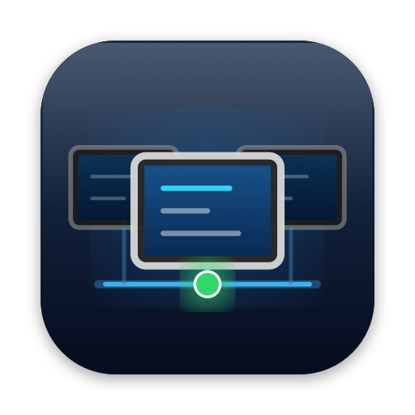
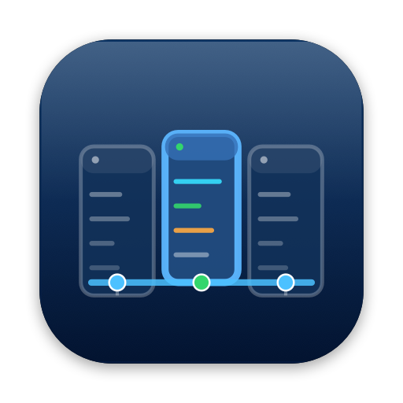
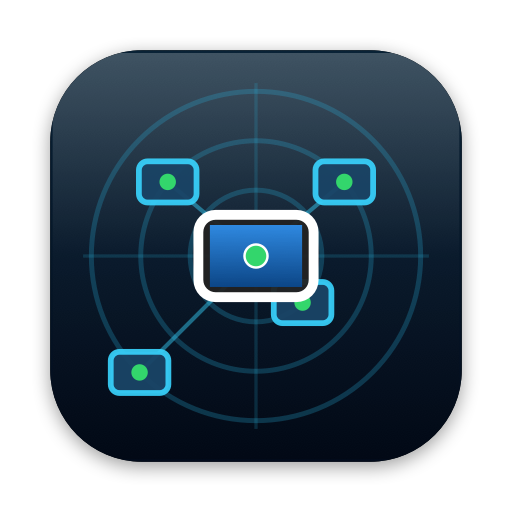

Fleet (A)
Fleet (B)
Fleet (C)
Fleet (D)
Programmatic AppKit render following wiki/concepts/macos-app-icon-sizing.md:
824×824 squircle on 1024×1024 canvas (inset 0.098, corner radius 0.2237 of shape), soft contact shadow, and pixel-tested legibility.


rectangle.connected.to.line.below) with terminal nodes.